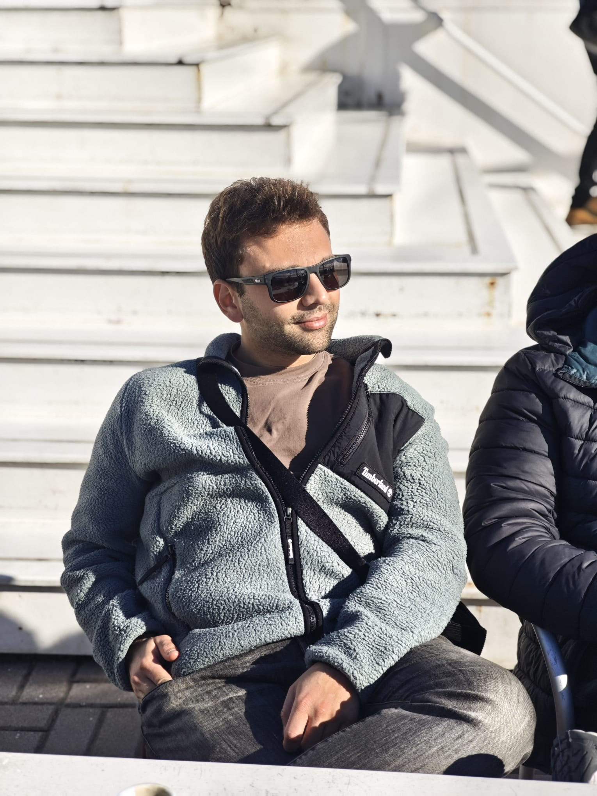

Mathematics · Probability Theory
Giacomo Greco
PostDoc Researcher, University of Rome Tor Vergata
Working in Prof. Domenico Marinucci group on probabilistic methods in machine learning.
Cofunded by PRIN project GRAFIA and MUR Departement of Excellence Programme 2023–2027, MatMod@Tov.
About
I am Giacomo Greco. As of September 2024 I am a PostDoc in Prof. Domenico Marinucci's group at the University of Rome Tor Vergata. I am broadly interested in probabilistic and variational methods applied to the theory of machine learning and generative AI.
Previously, I was a doctoral candidate at the Eindhoven University of Technology, in Prof. dr. Mark A. Peletier's group. My supervisors were Prof. Alberto Chiarini (University of Padova) and Prof. Giovanni Conforti (University of Padova and CMAP, École Polytechnique).
Short CV
“Considerate la vostra semenza: fatti non foste a viver come bruti ma per seguir virtute e canoscenza.” Dante Alighieri, Divina Commedia, Inferno XXVI, vv. 118–120
-
09/2024 – presentPostDoc Researcher (Assegnista) University of Rome Tor Vergata
-
09/2020 – 08/2024PhD student in Mathematics Eindhoven University of Technology (TU/e) — thesis defended 23/05/2024
-
01/2023 – 04/2023PhD Visiting student École Polytechnique — IP Paris
-
10/2018 – 07/2020MSc in Mathematics, with honors Sapienza University of Rome
-
10/2015 – 07/2018BSc in Mathematics, with honors Sapienza University of Rome
Research interests
I am interested in probability theory, in its interplay with analysis and geometry, and in problems arising from AI and ML. Particularly:
- the Schrödinger Bridge Problem (SP) and its relationship with (Entropic) Optimal Transport;
- the Optimal Transport point of view in (Diffusion) Generative Modelling;
- random fields and their relation with ML / GenAI;
- stochastic optimal control problems: long-time behaviour and exponential ergodicity;
- high-dimensional probability.